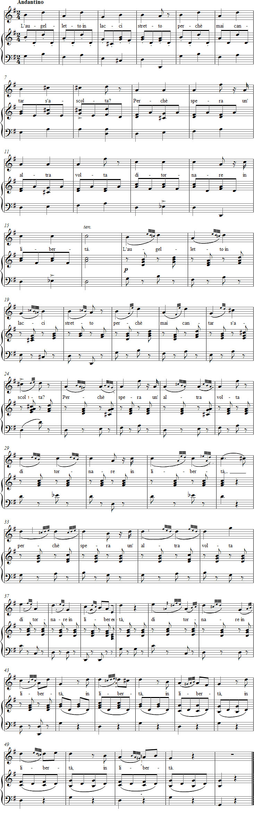

Vaccaj – Harjoitus 9b
Kuuntele äänite
Nuotit

Tehtävä 9b
Mordente in diversi modi
Mordentti eri muodoissa
tiukkaan ansaan juuttuneena?
Siksi, että se toivoo vielä joskus
palaavansa vapauteen.
Esitysohjeet
Tässä harjoituksessa laajennetaan taitoja jälkiheleellä. Harjoituksen melodiasta voitaneen olla Paton’n kanssa samaa mieltä: se on ”tavattoman yksinkertainen” ja siksi koristelun tarpeessa. Näin päästään käsiksi pikkunuotteihin.
Kahden nuotin koristelu tehdään samoin kuin edellisessäkin harjoituksessa eli kolmaskymmeneskahdesosina. Kolmen nuotin jälkihele ajatellaan puolestaan neljän kolmaskymmeneskahdesosan loppuosana, jolloin ensimmäisen ääni on sidottuna päänuotin kahdeksasosaan.
Ohjeita harjoitteluun
Patonin näkemyksestä poiketen Battaglia pitää teemaa viehättävänä. Tavuissa 17–19 sallitaan ornamenttien sitoa yhteen toisella iskulla tahdin viimeinen ääni ja sen teksti.
”Jälkihele” muuttuu laulussa seuraavasti:
17–19 kaksoishele
20 liukuetuhele
21–22 kaksoisetuhele (harvinainen muoto)
23 liukuetuhele
24 pralltrilli
Voit harjoitella ”mordentteja” usealla eri tyylillä. Laula kaksoishele kuudestoistaosilla ensimmäistä ääntä kevyesti aksentoiden. Liu’u etuheleen kolmaskymmeneskahdesosilla ensimmäistä ääntä keveästi aksentoiden. Anna sama arvo kaksoisetuheleelle ja anna sen joko pudota päänuotille (vanha käytäntö) tai sitten juuri ennen.
Pralltrilli esitetään voimakkaalla aksentilla ensimmäisellä äänellä.
Laulun jatkuessa annetaan Vaccajn merkitsemien kaarten olla paikoillaan ja lauletaan:
25 kaksoishele
27 kaksoishele
29 kaksoishele
31 jälkihele
33 kaksoishele
35 kaksoishele
37 jälkihele
38 jälkihele
39 jälkihele
41 kaksoishele
42 kaksoishele
43 kaksoishele
45 kaksoishele
47 kaksoishele
49 kaksoishele
51 kaksoishele
Laula sekä kaksoishele että jälkihele kuudestoistaosilla.
Pääpiirteissään voidaan sanoa, että jos pyrit laulamaan koristeet lyhimmällä mahdollisella aikaraamilla, tästä laulusta tulee mekaanisen ja ylikuormitetun kuuloinen esimerkki siitä, miten yksinkertaista melodiaa ei pidä koristella. Jos sitä vastoin muutat osittain kaarituksia ja pienennät kolmaskymmeneskahdesosia, harjoituksen luonne säilyy miellyttävänä kauttaaltaan ja säilytät perusmelodian rakenteen.
Ajatuksia tulkinnasta
Saadaksesi tulkinnassa esiin parodisia piirteitä, ota huomioon seuraavat ehdotukset:
Tulkitse positiivisesti sana liberta. Niin tulee ymmärretyksi, että jonain kauniina päivänä lintu varmasti vapautuu. Vahvista toiveikasta tunnetta pianistin staccatoilla. Tempon ei pidä olla hitaampi kuin neljäsosa M.M. 96. Huomioi Vaccajn ilmeinen kahdeksasosatavu-trokeen skandeeraus. Voit halutessasi kokeilla nousevan intervallin jälkipainotusta.
Joka yrittää viedä läpi tätä säilyttämällä pulssin, voi olla vakuuttunut pelottavasta tuloksesta.
Vaihtoehtoisessa tulkinnassa voit käyttää näitä ajatuksia:
Anna runolle vakava tunnelma, koska tiedät, että luottavaisesta laulusta huolimatta lintu ei koskaan pääse vapaaksi. Pianisti voi osallistua tähän tulkintaan soittamalla enemmän portamento kuin staccato. Tempon pitää olla huomattavan rauhallinen, ei enempää kuin neljäsosa M.M. 72.
Valitse painotuksien joukosta jokaisen fraasin viimeinen ykkönen ja suuntaa sitä kohti. Vaccajn aksentti tahdissa 8 on siis täysin paikallaan.
Forshufvud, G. 1994. Con lieve fiato. Lärarhandledning till Nicola Vaccajs Metodo pratico. Göteborgs universitetet.